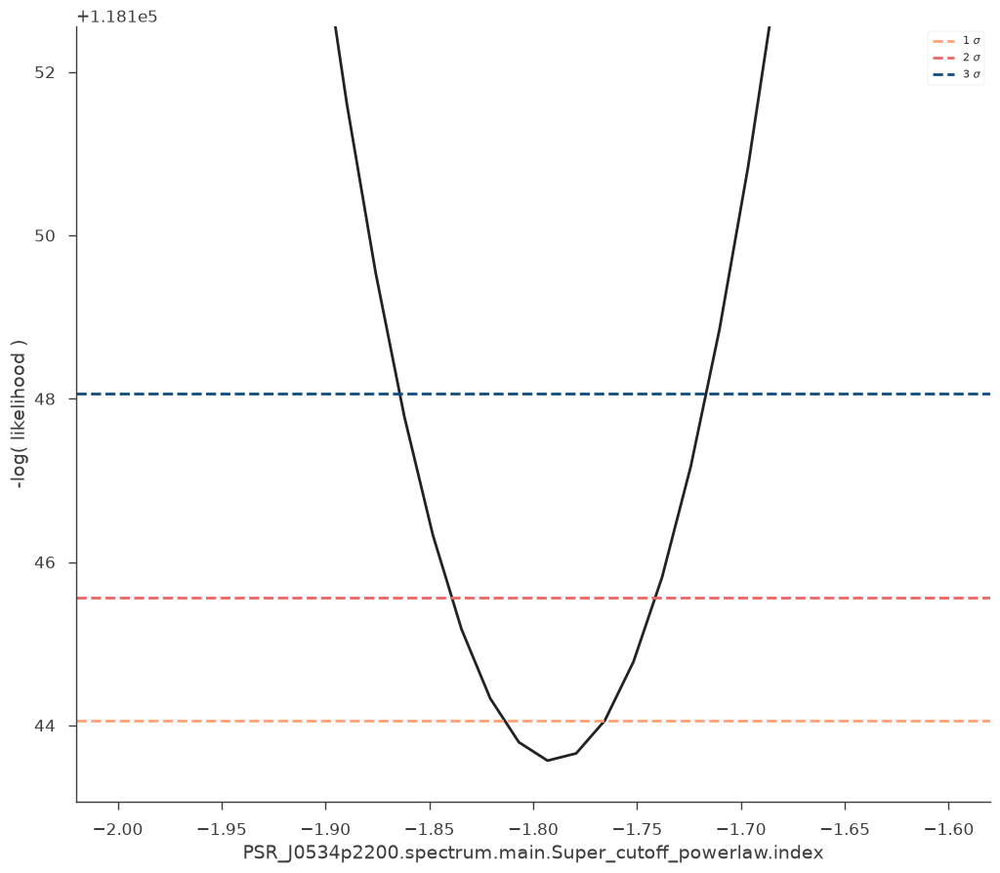
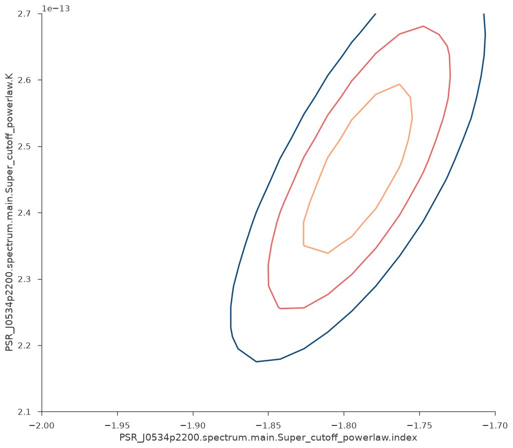
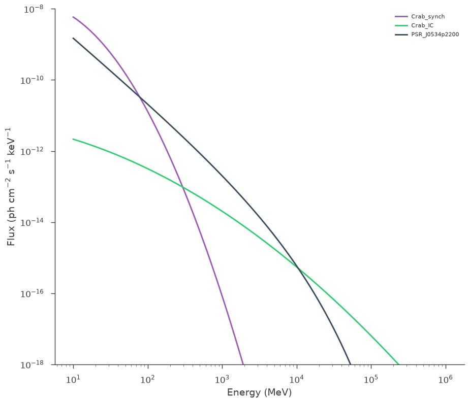
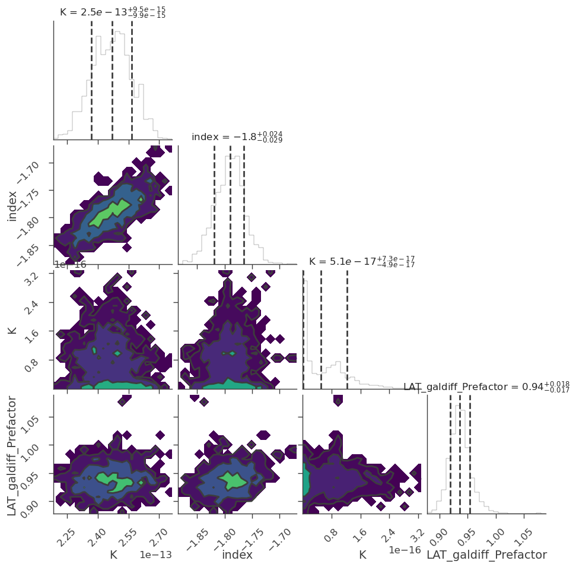

Fermi-LAT via FermiPyLike
In this Example we show how to use the fermipy plugin in threeML. We perform a Binned likelihood analysis and a Bayesian analysis of the Crab, optimizing the parameters of the Crab Pulsar (PSR J0534+2200) keeping fixed the parameters of the Crab Nebula. In the model, the nebula is described by two sources, one representing the synchrotron spectrum, the othet the Inverse Compton emission. In this example we show how to download Fermi-LAT data, how to build a model starting from the 4FGL, how to free and fix parameters of the sources in the model, and how to perform a spectral analysis using the fermipy plugin.
[1]:
import warnings
warnings.simplefilter("ignore")
import numpy as np
np.seterr(all="ignore")
import shutil
from IPython.display import Image, display
import glob
from pathlib import Path
import matplotlib as mpl
from matplotlib import pyplot as plt
from astropy.io import fits as pyfits
import scipy as sp
[2]:
%%capture
from threeML import *
[3]:
from jupyterthemes import jtplot
%matplotlib inline
jtplot.style(context="talk", fscale=1, ticks=True, grid=False)
set_threeML_style()
silence_warnings()
The Fermi 4FGL catalog
Let’s interrogate the 4FGL to get the sources in a radius of 20.0 deg around the Crab
[4]:
lat_catalog = FermiLATSourceCatalog()
ra, dec, table = lat_catalog.search_around_source("Crab", radius=20.0)
table
17:50:56 INFO The cache for fermilpsc does not yet exist. We will try to get_heasarc_table_as_pandas.py:63 build it
INFO Building cache for fermilpsc get_heasarc_table_as_pandas.py:103
Trying https://heasarc.gsfc.nasa.gov/cgi-bin/vo/cone/coneGet.pl?table=fermilpsc&
[4]:
| name | source_type | short_source_type | ra | dec | assoc_name | tevcat_assoc | Search_Offset |
|---|---|---|---|---|---|---|---|
| deg | deg | ||||||
| object | str52 | object | float64 | float64 | object | object | float64 |
| 4FGL J0534.5+2201s | pulsar wind nebula | PWN | 83.6331 | 22.0199 | Crab Nebula | Crab | 0.1552 |
| 4FGL J0534.5+2201i | pulsar wind nebula | PWN | 83.6330 | 22.0200 | Crab Nebula | Crab | 0.1597 |
| 4FGL J0534.5+2200 | pulsar, identified by pulsations | PSR | 83.6367 | 22.0149 | PSR J0534+2200 | Crab pulsar | 0.2818 |
| 4FGL J0526.3+2246 | active galaxy of uncertain type | bcu | 81.5908 | 22.7778 | NVSS J052622+224801 | 122.0980 | |
| 4FGL J0544.4+2238 | unknown | 86.1093 | 22.6418 | 142.4807 | |||
| 4FGL J0521.7+2112 | BL Lac type of blazar | bll | 80.4445 | 21.2131 | TXS 0518+211 | VER J0521+211 | 184.2504 |
| 4FGL J0528.3+1817 | unknown | unk | 82.0946 | 18.2943 | 1RXS J052829.6+181657 | 239.5831 | |
| 4FGL J0519.7+1939 | unknown | 79.9457 | 19.6646 | 250.3096 | |||
| 4FGL J0536.2+1733 | BL Lac type of blazar | bll | 84.0719 | 17.5534 | TXS 0533+175 | 268.9858 | |
| ... | ... | ... | ... | ... | ... | ... | ... |
| 4FGL J0431.0+3529c | unknown | 67.7650 | 35.4949 | 1159.0316 | |||
| 4FGL J0653.6+1636 | active galaxy of uncertain type | bcu | 103.4105 | 16.6106 | 2MASX J06533986+1636432 | 1164.8007 | |
| 4FGL J0658.7+2318 | unknown | 104.6808 | 23.3027 | 1166.9461 | |||
| 4FGL J0552.0+0256c | unknown | 88.0140 | 2.9417 | 1172.6725 | |||
| 4FGL J0555.1+0304 | active galaxy of uncertain type | bcu | 88.7776 | 3.0710 | GB6 J0555+0304 | 1175.6395 | |
| 4FGL J0658.2+2709 | active galaxy of uncertain type | bcu | 104.5735 | 27.1501 | B2 0655+27A | 1181.6704 | |
| 4FGL J0642.4+1048 | unknown | 100.6081 | 10.8135 | 1184.0885 | |||
| 4FGL J0506.9+0323 | BL Lac type of blazar | bll | 76.7314 | 3.3917 | NVSS J050650+032401 | 1187.5954 | |
| 4FGL J0409.2+2542 | unknown | 62.3144 | 25.7022 | 1189.0646 |
This gets a 3ML model (a Model instance) from the table above, where every source in the 4FGL becomes a Source instance. Note that by default all parameters of all sources are fixed.
[5]:
model = lat_catalog.get_model()
Let’s free all the normalizations within 3 deg from the center.
[6]:
model.free_point_sources_within_radius(3.0, normalization_only=True)
model.display()
| N | |
|---|---|
| Point sources | 196 |
| Extended sources | 0 |
| Particle sources | 0 |
Free parameters (5):
| value | min_value | max_value | unit | |
|---|---|---|---|---|
| Crab_synch.spectrum.main.Log_parabola.K | 0.0 | 0.0 | 0.0 | keV-1 s-1 cm-2 |
| Crab_IC.spectrum.main.Log_parabola.K | 0.0 | 0.0 | 0.0 | keV-1 s-1 cm-2 |
| PSR_J0534p2200.spectrum.main.Super_cutoff_powerlaw.K | 0.0 | 0.0 | 0.0 | keV-1 s-1 cm-2 |
| NVSS_J052622p224801.spectrum.main.Powerlaw.K | 0.0 | 0.0 | 0.0 | keV-1 s-1 cm-2 |
| x4FGL_J0544d4p2238.spectrum.main.Powerlaw.K | 0.0 | 0.0 | 0.0 | keV-1 s-1 cm-2 |
Fixed parameters (1089):
(abridged. Use complete=True to see all fixed parameters)
Properties (0):
(none)
Linked parameters (0):
(none)
Independent variables:
(none)
Linked functions (0):
(none)
but then let’s fix the sync and the IC components of the Crab nebula (cannot fit them with just one month of data) (these two methods are equivalent)
[7]:
model["Crab_IC.spectrum.main.Log_parabola.K"].fix = True
model.Crab_synch.spectrum.main.Log_parabola.K.fix = True
However, let’s free the index of the Crab Pulsar
[8]:
model.PSR_J0534p2200.spectrum.main.Super_cutoff_powerlaw.index.free = True
model.display()
| N | |
|---|---|
| Point sources | 196 |
| Extended sources | 0 |
| Particle sources | 0 |
Free parameters (4):
| value | min_value | max_value | unit | |
|---|---|---|---|---|
| PSR_J0534p2200.spectrum.main.Super_cutoff_powerlaw.K | 0.0 | 0.0 | 0.0 | keV-1 s-1 cm-2 |
| PSR_J0534p2200.spectrum.main.Super_cutoff_powerlaw.index | -1.826553 | -10.0 | 10.0 | |
| NVSS_J052622p224801.spectrum.main.Powerlaw.K | 0.0 | 0.0 | 0.0 | keV-1 s-1 cm-2 |
| x4FGL_J0544d4p2238.spectrum.main.Powerlaw.K | 0.0 | 0.0 | 0.0 | keV-1 s-1 cm-2 |
Fixed parameters (1090):
(abridged. Use complete=True to see all fixed parameters)
Properties (0):
(none)
Linked parameters (0):
(none)
Independent variables:
(none)
Linked functions (0):
(none)
[9]:
# Download data from Jan 01 2010 to February 1 2010
tstart = "2010-01-01 00:00:00"
tstop = "2010-02-01 00:00:00"
# Note that this will understand if you already download these files, and will
# not do it twice unless you change your selection or the outdir
evfile, scfile = download_LAT_data(
ra,
dec,
20.0,
tstart,
tstop,
time_type="Gregorian",
destination_directory="Crab_data",
)
17:51:05 INFO Query parameters: download_LAT_data.py:255
INFO coordfield = 83.6324,22.0174 download_LAT_data.py:258
INFO coordsystem = J2000 download_LAT_data.py:258
INFO shapefield = 20.0 download_LAT_data.py:258
INFO timefield = 2010-01-01 00:00:00,2010-02-01 download_LAT_data.py:258 00:00:00
INFO timetype = Gregorian download_LAT_data.py:258
INFO energyfield = 30.000,1000000.000 download_LAT_data.py:258
INFO photonOrExtendedOrNone = Photon download_LAT_data.py:258
INFO destination = query download_LAT_data.py:258
INFO spacecraft = checked download_LAT_data.py:258
INFO Query ID: 9f8de773c6ba4abf7fbabfdb909f7005 download_LAT_data.py:262
17:51:06 INFO Estimated complete time for your query: 13 seconds download_LAT_data.py:395
INFO If this download fails, you can find your data at download_LAT_data.py:404 https://fermi.gsfc.nasa.gov/cgi-bin/ssc/LAT/QueryResults.cgi?id=L2602241 25107291379BF48 (when ready)
17:51:07 INFO We are gonna wait another 5.0s and retry download_LAT_data.py:461
17:51:12 INFO We are gonna wait another 5.0s and retry download_LAT_data.py:461
17:51:18 INFO Downloading FT1 and FT2 files... download_LAT_data.py:474
17:51:19 INFO ['https://fermi.gsfc.nasa.gov/FTP/fermi/data/lat/queries/L2602241251072 download_LAT_data.py:477 91379BF48_SC00.fits', 'https://fermi.gsfc.nasa.gov/FTP/fermi/data/lat/queries/L260224125107291 379BF48_PH00.fits']
Configuration for Fermipy
3ML provides and intreface into Fermipy via the FermipyLike plugin. We can use it to generate basic configuration files.
Note
Currently, the FermipyLike plugin does not provide an interface to handle extended sources. This will change
[10]:
config = FermipyLike.get_basic_config(
evfile=evfile,
scfile=scfile,
ra=ra,
dec=dec,
fermipy_verbosity=1,
fermitools_chatter=0,
)
# See what we just got
config.display()
binning:
binsperdec: 8
binsz: 0.1
roiwidth: 10.0
data:
evfile: /home/runner/work/threeML/threeML/docs/md_docs/slow_execute/Crab_data/L9f8de773c6ba4abf7fbabfdb909f7005_FT1.fits
scfile: /home/runner/work/threeML/threeML/docs/md_docs/slow_execute/Crab_data/L260224125107291379BF48_SC00.fits
logging:
chatter: 0
verbosity: 1
selection:
dec: 22.017394786671968
emax: 100000.0
emin: 100.0
evclass: 128
evtype: 3
filter: DATA_QUAL>0 && LAT_CONFIG==1
ra: 83.6324076248989
tmax: 286675202.0
tmin: 283996802.0
zmax: 100.0
binning: binsperdec: 8 binsz: 0.1 roiwidth: 10.0 data: evfile: /home/runner/work/threeML/threeML/docs/md_docs/slow_execute/Crab_data/L9f8de773c6ba4abf7fbabfdb909f7005_FT1.fits scfile: /home/runner/work/threeML/threeML/docs/md_docs/slow_execute/Crab_data/L260224125107291379BF48_SC00.fits logging: chatter: 0 verbosity: 1 selection: dec: 22.017394786671968 emax: 100000.0 emin: 100.0 evclass: 128 evtype: 3 filter: DATA_QUAL>0 && LAT_CONFIG==1 ra: 83.6324076248989 tmax: 286675202.0 tmin: 283996802.0 zmax: 100.0
You can of course modify the configuration as a dictionary
[11]:
config["selection"]["emax"] = 300000.0
and even add sections
[12]:
config["gtlike"] = {"edisp": False}
config.display()
binning:
binsperdec: 8
binsz: 0.1
roiwidth: 10.0
data:
evfile: /home/runner/work/threeML/threeML/docs/md_docs/slow_execute/Crab_data/L9f8de773c6ba4abf7fbabfdb909f7005_FT1.fits
scfile: /home/runner/work/threeML/threeML/docs/md_docs/slow_execute/Crab_data/L260224125107291379BF48_SC00.fits
gtlike:
edisp: false
logging:
chatter: 0
verbosity: 1
selection:
dec: 22.017394786671968
emax: 300000.0
emin: 100.0
evclass: 128
evtype: 3
filter: DATA_QUAL>0 && LAT_CONFIG==1
ra: 83.6324076248989
tmax: 286675202.0
tmin: 283996802.0
zmax: 100.0
binning: binsperdec: 8 binsz: 0.1 roiwidth: 10.0 data: evfile: /home/runner/work/threeML/threeML/docs/md_docs/slow_execute/Crab_data/L9f8de773c6ba4abf7fbabfdb909f7005_FT1.fits scfile: /home/runner/work/threeML/threeML/docs/md_docs/slow_execute/Crab_data/L260224125107291379BF48_SC00.fits gtlike: edisp: false logging: chatter: 0 verbosity: 1 selection: dec: 22.017394786671968 emax: 300000.0 emin: 100.0 evclass: 128 evtype: 3 filter: DATA_QUAL>0 && LAT_CONFIG==1 ra: 83.6324076248989 tmax: 286675202.0 tmin: 283996802.0 zmax: 100.0
FermipyLike
Let’s create an instance of the plugin/ Note that here no processing is made, because fermipy still doesn’t know about the model you want to use.
[13]:
LAT = FermipyLike("LAT", config)
The plugin modifies the configuration as needed to get the output files in a unique place, which will stay the same as long as your selection does not change.
[14]:
config.display()
binning:
binsperdec: 8
binsz: 0.1
roiwidth: 10.0
data:
evfile: /home/runner/work/threeML/threeML/docs/md_docs/slow_execute/Crab_data/L9f8de773c6ba4abf7fbabfdb909f7005_FT1.fits
scfile: /home/runner/work/threeML/threeML/docs/md_docs/slow_execute/Crab_data/L260224125107291379BF48_SC00.fits
fileio:
outdir: __db8f6a85b061c4189e62193e6ef5b751
gtlike:
edisp: false
logging:
chatter: 0
verbosity: 1
selection:
dec: 22.017394786671968
emax: 300000.0
emin: 100.0
evclass: 128
evtype: 3
filter: DATA_QUAL>0 && LAT_CONFIG==1
ra: 83.6324076248989
tmax: 286675202.0
tmin: 283996802.0
zmax: 100.0
binning: binsperdec: 8 binsz: 0.1 roiwidth: 10.0 data: evfile: /home/runner/work/threeML/threeML/docs/md_docs/slow_execute/Crab_data/L9f8de773c6ba4abf7fbabfdb909f7005_FT1.fits scfile: /home/runner/work/threeML/threeML/docs/md_docs/slow_execute/Crab_data/L260224125107291379BF48_SC00.fits fileio: outdir: __db8f6a85b061c4189e62193e6ef5b751 gtlike: edisp: false logging: chatter: 0 verbosity: 1 selection: dec: 22.017394786671968 emax: 300000.0 emin: 100.0 evclass: 128 evtype: 3 filter: DATA_QUAL>0 && LAT_CONFIG==1 ra: 83.6324076248989 tmax: 286675202.0 tmin: 283996802.0 zmax: 100.0
Here is where the fermipy processing happens (the .setup method)
[15]:
fermipy_output_directory = Path(config["fileio"]["outdir"])
print("Fermipy Output directoty: %s" % fermipy_output_directory)
# This remove the output directory, to start a fresh analysis...
if fermipy_output_directory.exists():
shutil.rmtree(fermipy_output_directory)
# Here is where the fermipy processing happens (the .setup method)
data = DataList(LAT)
jl = JointLikelihood(model, data)
Fermipy Output directoty: __db8f6a85b061c4189e62193e6ef5b751
17:51:27 INFO Using IRFs P8R3_SOURCE_V3 FermipyLike.py:118
Found Galactic template for IRF. P8R3_SOURCE_V3: /home/runner/miniconda3/envs/test_env/share/fermitools/refdata/fermi/galdiffuse/gll_iem_v07.fits
Cutting the template around the ROI:
Found Isotropic template for irf P8R3_SOURCE_V3: /home/runner/miniconda3/envs/test_env/share/fermitools/refdata/fermi/galdiffuse/iso_P8R3_SOURCE_V3_v1.txt
WARNING: Point source PKS_0459p060 lies 17.6445 degrees from the ROI center at RA, Dec = 83.6324, 22.0174 7.57107
WARNING: Point source x4FGL_J0610d7p3752 lies 17.6638 degrees from the ROI center at RA, Dec = 83.6324, 22.0174 7.57107
WARNING: Point source x4FGL_J0624d0p0855 lies 17.6933 degrees from the ROI center at RA, Dec = 83.6324, 22.0174 7.57107
WARNING: Point source x4C_p06d21 lies 17.7222 degrees from the ROI center at RA, Dec = 83.6324, 22.0174 7.57107
WARNING: Point source x1ES_0647p250 lies 17.726 degrees from the ROI center at RA, Dec = 83.6324, 22.0174 7.57107
WARNING: Point source NVSS_J065035p205556 lies 17.7273 degrees from the ROI center at RA, Dec = 83.6324, 22.0174 7.57107
WARNING: Point source x4FGL_J0551d7p0446 lies 17.7387 degrees from the ROI center at RA, Dec = 83.6324, 22.0174 7.57107
WARNING: Point source GB6_J0454p3724 lies 17.747 degrees from the ROI center at RA, Dec = 83.6324, 22.0174 7.57107
WARNING: Point source PSR_J0631p1036 lies 17.7845 degrees from the ROI center at RA, Dec = 83.6324, 22.0174 7.57107
WARNING: Point source GB6_J0648p1749 lies 17.8418 degrees from the ROI center at RA, Dec = 83.6324, 22.0174 7.57107
WARNING: Point source x4FGL_J0600d8p0509c lies 18.0107 degrees from the ROI center at RA, Dec = 83.6324, 22.0174 7.57107
WARNING: Point source x4FGL_J0537d6p0400 lies 18.0307 degrees from the ROI center at RA, Dec = 83.6324, 22.0174 7.57107
WARNING: Point source x4FGL_J0442d8p3609 lies 18.0625 degrees from the ROI center at RA, Dec = 83.6324, 22.0174 7.57107
WARNING: Point source x4FGL_J0424d8p3117 lies 18.0853 degrees from the ROI center at RA, Dec = 83.6324, 22.0174 7.57107
WARNING: Point source x4FGL_J0450d7p0715 lies 18.1442 degrees from the ROI center at RA, Dec = 83.6324, 22.0174 7.57107
WARNING: Point source x4FGL_J0640d4p3307 lies 18.3144 degrees from the ROI center at RA, Dec = 83.6324, 22.0174 7.57107
WARNING: Point source B2_0552p39A lies 18.3271 degrees from the ROI center at RA, Dec = 83.6324, 22.0174 7.57107
WARNING: Point source x1RXS_J064814d1p160708 lies 18.3626 degrees from the ROI center at RA, Dec = 83.6324, 22.0174 7.57107
WARNING: Point source x4FGL_J0634d7p1036 lies 18.3815 degrees from the ROI center at RA, Dec = 83.6324, 22.0174 7.57107
WARNING: Point source MG2_J065230p1934 lies 18.3959 degrees from the ROI center at RA, Dec = 83.6324, 22.0174 7.57107
WARNING: Point source PKS_0502p049 lies 18.4231 degrees from the ROI center at RA, Dec = 83.6324, 22.0174 7.57107
WARNING: Point source RX_J0648d7p1516 lies 18.8098 degrees from the ROI center at RA, Dec = 83.6324, 22.0174 7.57107
WARNING: Point source GB6_J0620p3806 lies 18.8371 degrees from the ROI center at RA, Dec = 83.6324, 22.0174 7.57107
WARNING: Point source PSR_J0622p3749 lies 18.8534 degrees from the ROI center at RA, Dec = 83.6324, 22.0174 7.57107
WARNING: Point source x4FGL_J0641d4p3349 lies 18.8651 degrees from the ROI center at RA, Dec = 83.6324, 22.0174 7.57107
WARNING: Point source B2_0654p24 lies 18.868 degrees from the ROI center at RA, Dec = 83.6324, 22.0174 7.57107
WARNING: Point source x1RXS_J065331d8p181448 lies 18.8966 degrees from the ROI center at RA, Dec = 83.6324, 22.0174 7.57107
WARNING: Point source x4FGL_J0412d6p2253c lies 18.9306 degrees from the ROI center at RA, Dec = 83.6324, 22.0174 7.57107
WARNING: Point source GB6_J0653p2816 lies 18.9492 degrees from the ROI center at RA, Dec = 83.6324, 22.0174 7.57107
WARNING: Point source PMN_J0444p0717 lies 19.0008 degrees from the ROI center at RA, Dec = 83.6324, 22.0174 7.57107
WARNING: Point source MG1_J050533p0415 lies 19.0838 degrees from the ROI center at RA, Dec = 83.6324, 22.0174 7.57107
WARNING: Point source x4FGL_J0559d3p0352 lies 19.1179 degrees from the ROI center at RA, Dec = 83.6324, 22.0174 7.57107
WARNING: Point source TXS_0431p092 lies 19.1204 degrees from the ROI center at RA, Dec = 83.6324, 22.0174 7.57107
WARNING: Point source B3_0509p406 lies 19.2302 degrees from the ROI center at RA, Dec = 83.6324, 22.0174 7.57107
WARNING: Point source B2_0635p35 lies 19.2972 degrees from the ROI center at RA, Dec = 83.6324, 22.0174 7.57107
WARNING: Point source PKS_0550p032 lies 19.3054 degrees from the ROI center at RA, Dec = 83.6324, 22.0174 7.57107
WARNING: Point source x4FGL_J0431d0p3529c lies 19.3172 degrees from the ROI center at RA, Dec = 83.6324, 22.0174 7.57107
WARNING: Point source x2MASX_J06533986p1636432 lies 19.4133 degrees from the ROI center at RA, Dec = 83.6324, 22.0174 7.57107
WARNING: Point source x4FGL_J0658d7p2318 lies 19.4491 degrees from the ROI center at RA, Dec = 83.6324, 22.0174 7.57107
WARNING: Point source x4FGL_J0552d0p0256c lies 19.5445 degrees from the ROI center at RA, Dec = 83.6324, 22.0174 7.57107
WARNING: Point source GB6_J0555p0304 lies 19.594 degrees from the ROI center at RA, Dec = 83.6324, 22.0174 7.57107
WARNING: Point source B2_0655p27A lies 19.6945 degrees from the ROI center at RA, Dec = 83.6324, 22.0174 7.57107
WARNING: Point source x4FGL_J0642d4p1048 lies 19.7348 degrees from the ROI center at RA, Dec = 83.6324, 22.0174 7.57107
WARNING: Point source NVSS_J050650p032401 lies 19.7933 degrees from the ROI center at RA, Dec = 83.6324, 22.0174 7.57107
WARNING: Point source x4FGL_J0409d2p2542 lies 19.8177 degrees from the ROI center at RA, Dec = 83.6324, 22.0174 7.57107
17:58:40 INFO set the minimizer to minuit joint_likelihood.py:1017
The normalization factors of the LAT background components are included in the models as nuisance parameters. They are only added during the previous step (during the model assignment). Let’s display them:
[16]:
for k, v in LAT.nuisance_parameters.items():
print(k, ":", v)
LAT_isodiff_Normalization : Parameter LAT_isodiff_Normalization = 1.0 []
(min_value = 0.001, max_value = 1000.0, delta = 0.01, free = True)
LAT_galdiff_Prefactor : Parameter LAT_galdiff_Prefactor = 1.0 []
(min_value = 0.1, max_value = 10.0, delta = 0.01, free = True)
We will fix the isotropic BG as we are not sensitive to it with this dataset. We will also fix one more weak source.
[17]:
model.LAT_isodiff_Normalization.fix = True
model.x4FGL_J0544d4p2238.spectrum.main.Powerlaw.K.fix = True
model.display()
| N | |
|---|---|
| Point sources | 196 |
| Extended sources | 0 |
| Particle sources | 0 |
Free parameters (4):
| value | min_value | max_value | unit | |
|---|---|---|---|---|
| PSR_J0534p2200.spectrum.main.Super_cutoff_powerlaw.K | 0.0 | 0.0 | 0.0 | keV-1 s-1 cm-2 |
| PSR_J0534p2200.spectrum.main.Super_cutoff_powerlaw.index | -1.826553 | -10.0 | 10.0 | |
| NVSS_J052622p224801.spectrum.main.Powerlaw.K | 0.0 | 0.0 | 0.0 | keV-1 s-1 cm-2 |
| LAT_galdiff_Prefactor | 1.0 | 0.1 | 10.0 |
Fixed parameters (1092):
(abridged. Use complete=True to see all fixed parameters)
Properties (0):
(none)
Linked parameters (0):
(none)
Independent variables:
(none)
Linked functions (0):
(none)
Performing the fit
[18]:
jl.set_minimizer("minuit")
res = jl.fit()
INFO set the minimizer to MINUIT joint_likelihood.py:1034
Best fit values:
| result | unit | |
|---|---|---|
| parameter | ||
| PSR_J0534p2200...K | (2.46 -0.08 +0.09) x 10^-13 | 1 / (keV s cm2) |
| PSR_J0534p2200...index | -1.790 +/- 0.025 | |
| NVSS_J052622p224801.spectrum.main.Powerlaw.K | (0.9 -0.5 +1.0) x 10^-16 | 1 / (keV s cm2) |
| LAT_galdiff_Prefactor | (9.36 +/- 0.08) x 10^-1 |
Correlation matrix:
| 1.00 | 0.73 | -0.05 | -0.11 |
| 0.73 | 1.00 | 0.09 | 0.16 |
| -0.05 | 0.09 | 1.00 | -0.14 |
| -0.11 | 0.16 | -0.14 | 1.00 |
Values of -log(likelihood) at the minimum:
| -log(likelihood) | |
|---|---|
| LAT | 118143.560677 |
| total | 118143.560677 |
Values of statistical measures:
| statistical measures | |
|---|---|
| AIC | 236295.121497 |
| BIC | 236337.291533 |
Now let’s compute the errors on the best fit parameters
[19]:
res = jl.get_errors()
| result | unit | |
|---|---|---|
| parameter | ||
| PSR_J0534p2200...K | (2.46 +/- 0.09) x 10^-13 | 1 / (keV s cm2) |
| PSR_J0534p2200...index | -1.790 -0.025 +0.024 | |
| NVSS_J052622p224801.spectrum.main.Powerlaw.K | (9 -6 +7) x 10^-17 | 1 / (keV s cm2) |
| LAT_galdiff_Prefactor | (9.36 -0.17 +0.18) x 10^-1 |
We might also want to look at the profile of the likelihood for each parameter.
[20]:
res = jl.get_contours(
model.PSR_J0534p2200.spectrum.main.Super_cutoff_powerlaw.index, -2.0, -1.6, 30
)
[21]:
res[-1]
[21]:

Or we might want to produce a contour plot
[22]:
res = jl.get_contours(
"PSR_J0534p2200.spectrum.main.Super_cutoff_powerlaw.K",
2.1e-13,
2.7e-13,
20,
"PSR_J0534p2200.spectrum.main.Super_cutoff_powerlaw.index",
-2.0,
-1.7,
20,
)
[23]:
res[-1]
[23]:

Pro-trick: We can also axcess the GTAnalysis object of fermipy:
[24]:
# res = jl.fit()
# LAT.gta.write_roi('test',make_plots=True)
All the plots are saved in the output directory as png files:
[25]:
# pngs=Path(f"{fermipy_output_directory}").glob("*png")
# for png in pngs:
# print(png)
# my_image=Image(str(png))
# display(my_image)
We can also plot the resulting model:
[26]:
energies = np.logspace(1, 6, 100) * u.MeV
fig, ax = plt.subplots()
# we only want to visualize the relevant sources...
src_to_plot = ["Crab", "PSR_J0534p2200"]
# Now loop over all point sources and plot them
for source_name, point_source in model.point_sources.items():
for src in src_to_plot:
if src in source_name:
# Plot the sum of all components for this source
ax.loglog(energies, point_source(energies), label=source_name)
# If there is more than one component, plot them also separately
if len(point_source.components) > 1:
for component_name, component in point_source.components.items():
ax.loglog(
energies,
component.shape(energies),
"--",
label=f"{component_name} of {source_name}",
)
# Add a legend
ax.legend(loc=0, frameon=False)
ax.set_xlabel("Energy (MeV)")
ax.set_ylabel(r"Flux (ph cm$^{-2}$ s$^{-1}$ keV$^{-1}$")
ax.set_ylim([1e-18, 1e-8])
# show the plot
fig
[26]:

We can also do a bayesian analysis.
This will set priors based on the current defined min-max (log-uniform or uniform).
[27]:
for param in model.free_parameters.values():
if param.has_transformation():
param.set_uninformative_prior(Log_uniform_prior)
else:
param.set_uninformative_prior(Uniform_prior)
[28]:
# It's better to remove the output directory,...
shutil.rmtree(fermipy_output_directory)
bayes = BayesianAnalysis(model, data)
18:14:38 INFO Using IRFs P8R3_SOURCE_V3 FermipyLike.py:118
Found Galactic template for IRF. P8R3_SOURCE_V3: /home/runner/miniconda3/envs/test_env/share/fermitools/refdata/fermi/galdiffuse/gll_iem_v07.fits
Cutting the template around the ROI:
Found Isotropic template for irf P8R3_SOURCE_V3: /home/runner/miniconda3/envs/test_env/share/fermitools/refdata/fermi/galdiffuse/iso_P8R3_SOURCE_V3_v1.txt
WARNING: Point source PKS_0459p060 lies 17.6445 degrees from the ROI center at RA, Dec = 83.6324, 22.0174 7.57107
WARNING: Point source x4FGL_J0610d7p3752 lies 17.6638 degrees from the ROI center at RA, Dec = 83.6324, 22.0174 7.57107
WARNING: Point source x4FGL_J0624d0p0855 lies 17.6933 degrees from the ROI center at RA, Dec = 83.6324, 22.0174 7.57107
WARNING: Point source x4C_p06d21 lies 17.7222 degrees from the ROI center at RA, Dec = 83.6324, 22.0174 7.57107
WARNING: Point source x1ES_0647p250 lies 17.726 degrees from the ROI center at RA, Dec = 83.6324, 22.0174 7.57107
WARNING: Point source NVSS_J065035p205556 lies 17.7273 degrees from the ROI center at RA, Dec = 83.6324, 22.0174 7.57107
WARNING: Point source x4FGL_J0551d7p0446 lies 17.7387 degrees from the ROI center at RA, Dec = 83.6324, 22.0174 7.57107
WARNING: Point source GB6_J0454p3724 lies 17.747 degrees from the ROI center at RA, Dec = 83.6324, 22.0174 7.57107
WARNING: Point source PSR_J0631p1036 lies 17.7845 degrees from the ROI center at RA, Dec = 83.6324, 22.0174 7.57107
WARNING: Point source GB6_J0648p1749 lies 17.8418 degrees from the ROI center at RA, Dec = 83.6324, 22.0174 7.57107
WARNING: Point source x4FGL_J0600d8p0509c lies 18.0107 degrees from the ROI center at RA, Dec = 83.6324, 22.0174 7.57107
WARNING: Point source x4FGL_J0537d6p0400 lies 18.0307 degrees from the ROI center at RA, Dec = 83.6324, 22.0174 7.57107
WARNING: Point source x4FGL_J0442d8p3609 lies 18.0625 degrees from the ROI center at RA, Dec = 83.6324, 22.0174 7.57107
WARNING: Point source x4FGL_J0424d8p3117 lies 18.0853 degrees from the ROI center at RA, Dec = 83.6324, 22.0174 7.57107
WARNING: Point source x4FGL_J0450d7p0715 lies 18.1442 degrees from the ROI center at RA, Dec = 83.6324, 22.0174 7.57107
WARNING: Point source x4FGL_J0640d4p3307 lies 18.3144 degrees from the ROI center at RA, Dec = 83.6324, 22.0174 7.57107
WARNING: Point source B2_0552p39A lies 18.3271 degrees from the ROI center at RA, Dec = 83.6324, 22.0174 7.57107
WARNING: Point source x1RXS_J064814d1p160708 lies 18.3626 degrees from the ROI center at RA, Dec = 83.6324, 22.0174 7.57107
WARNING: Point source x4FGL_J0634d7p1036 lies 18.3815 degrees from the ROI center at RA, Dec = 83.6324, 22.0174 7.57107
WARNING: Point source MG2_J065230p1934 lies 18.3959 degrees from the ROI center at RA, Dec = 83.6324, 22.0174 7.57107
WARNING: Point source PKS_0502p049 lies 18.4231 degrees from the ROI center at RA, Dec = 83.6324, 22.0174 7.57107
WARNING: Point source RX_J0648d7p1516 lies 18.8098 degrees from the ROI center at RA, Dec = 83.6324, 22.0174 7.57107
WARNING: Point source GB6_J0620p3806 lies 18.8371 degrees from the ROI center at RA, Dec = 83.6324, 22.0174 7.57107
WARNING: Point source PSR_J0622p3749 lies 18.8534 degrees from the ROI center at RA, Dec = 83.6324, 22.0174 7.57107
WARNING: Point source x4FGL_J0641d4p3349 lies 18.8651 degrees from the ROI center at RA, Dec = 83.6324, 22.0174 7.57107
WARNING: Point source B2_0654p24 lies 18.868 degrees from the ROI center at RA, Dec = 83.6324, 22.0174 7.57107
WARNING: Point source x1RXS_J065331d8p181448 lies 18.8966 degrees from the ROI center at RA, Dec = 83.6324, 22.0174 7.57107
WARNING: Point source x4FGL_J0412d6p2253c lies 18.9306 degrees from the ROI center at RA, Dec = 83.6324, 22.0174 7.57107
WARNING: Point source GB6_J0653p2816 lies 18.9492 degrees from the ROI center at RA, Dec = 83.6324, 22.0174 7.57107
WARNING: Point source PMN_J0444p0717 lies 19.0008 degrees from the ROI center at RA, Dec = 83.6324, 22.0174 7.57107
WARNING: Point source MG1_J050533p0415 lies 19.0838 degrees from the ROI center at RA, Dec = 83.6324, 22.0174 7.57107
WARNING: Point source x4FGL_J0559d3p0352 lies 19.1179 degrees from the ROI center at RA, Dec = 83.6324, 22.0174 7.57107
WARNING: Point source TXS_0431p092 lies 19.1204 degrees from the ROI center at RA, Dec = 83.6324, 22.0174 7.57107
WARNING: Point source B3_0509p406 lies 19.2302 degrees from the ROI center at RA, Dec = 83.6324, 22.0174 7.57107
WARNING: Point source B2_0635p35 lies 19.2972 degrees from the ROI center at RA, Dec = 83.6324, 22.0174 7.57107
WARNING: Point source PKS_0550p032 lies 19.3054 degrees from the ROI center at RA, Dec = 83.6324, 22.0174 7.57107
WARNING: Point source x4FGL_J0431d0p3529c lies 19.3172 degrees from the ROI center at RA, Dec = 83.6324, 22.0174 7.57107
WARNING: Point source x2MASX_J06533986p1636432 lies 19.4133 degrees from the ROI center at RA, Dec = 83.6324, 22.0174 7.57107
WARNING: Point source x4FGL_J0658d7p2318 lies 19.4491 degrees from the ROI center at RA, Dec = 83.6324, 22.0174 7.57107
WARNING: Point source x4FGL_J0552d0p0256c lies 19.5445 degrees from the ROI center at RA, Dec = 83.6324, 22.0174 7.57107
WARNING: Point source GB6_J0555p0304 lies 19.594 degrees from the ROI center at RA, Dec = 83.6324, 22.0174 7.57107
WARNING: Point source B2_0655p27A lies 19.6945 degrees from the ROI center at RA, Dec = 83.6324, 22.0174 7.57107
WARNING: Point source x4FGL_J0642d4p1048 lies 19.7348 degrees from the ROI center at RA, Dec = 83.6324, 22.0174 7.57107
WARNING: Point source NVSS_J050650p032401 lies 19.7933 degrees from the ROI center at RA, Dec = 83.6324, 22.0174 7.57107
WARNING: Point source x4FGL_J0409d2p2542 lies 19.8177 degrees from the ROI center at RA, Dec = 83.6324, 22.0174 7.57107
Take care of the nuisance parameters LAT_isodiff_Normalization and LAT_galdiff_Prefactor, which are only created during the previous step.
[29]:
model.LAT_isodiff_Normalization.fix = True
model.LAT_galdiff_Prefactor.set_uninformative_prior(Log_uniform_prior)
[30]:
bayes.set_sampler("emcee")
n_walkers = 10
burn_in = 10
n_samples = 500
bayes.sampler.setup(n_iterations=n_samples, n_burn_in=burn_in, n_walkers=n_walkers)
res = bayes.sample()
18:21:43 INFO sampler set to emcee bayesian_analysis.py:186
18:23:58 INFO Mean acceptance fraction: 0.4628000000000001 emcee_sampler.py:145
18:23:59 INFO fit restored to maximum of posterior sampler_base.py:168
INFO fit restored to maximum of posterior sampler_base.py:168
Maximum a posteriori probability (MAP) point:
| result | unit | |
|---|---|---|
| parameter | ||
| PSR_J0534p2200...K | (2.62 -0.25 -0.06) x 10^-13 | 1 / (keV s cm2) |
| PSR_J0534p2200...index | -1.761 -0.06 -0.004 | |
| NVSS_J052622p224801.spectrum.main.Powerlaw.K | (0.000 +0.013 +1.2) x 10^-16 | 1 / (keV s cm2) |
| LAT_galdiff_Prefactor | (9.31 -0.12 +0.23) x 10^-1 |
Values of -log(posterior) at the minimum:
| -log(posterior) | |
|---|---|
| LAT | -118072.34472 |
| total | -118072.34472 |
Values of statistical measures:
| statistical measures | |
|---|---|
| AIC | 236152.689582 |
| BIC | 236194.859619 |
| DIC | 236159.012550 |
| PDIC | 2.237095 |
You can access to the parameter range like this (HPD):
[31]:
this_K = bayes.results.get_variates(
"PSR_J0534p2200.spectrum.main.Super_cutoff_powerlaw.K"
)
this_idx = bayes.results.get_variates(
"PSR_J0534p2200.spectrum.main.Super_cutoff_powerlaw.index"
)
print("Highest_posterior_density_intervals :")
print(
"K (68%%): %10.2e,%10.2e" % this_K.highest_posterior_density_interval(cl=0.68)
)
print(
"K (95%%): %10.2e,%10.2e" % this_K.highest_posterior_density_interval(cl=0.95)
)
print(
"Index (68%%): %10.2e,%10.2e" % this_idx.highest_posterior_density_interval(cl=0.68)
)
print(
"Index (95%%): %10.2e,%10.2e" % this_idx.highest_posterior_density_interval(cl=0.95)
)
Highest_posterior_density_intervals :
K (68%): 2.36e-13, 2.56e-13
K (95%): 2.28e-13, 2.65e-13
Index (68%): -1.82e+00, -1.76e+00
Index (95%): -1.84e+00, -1.73e+00
[32]:
corner_figure = bayes.results.corner_plot()
corner_figure
[32]:

[ ]: